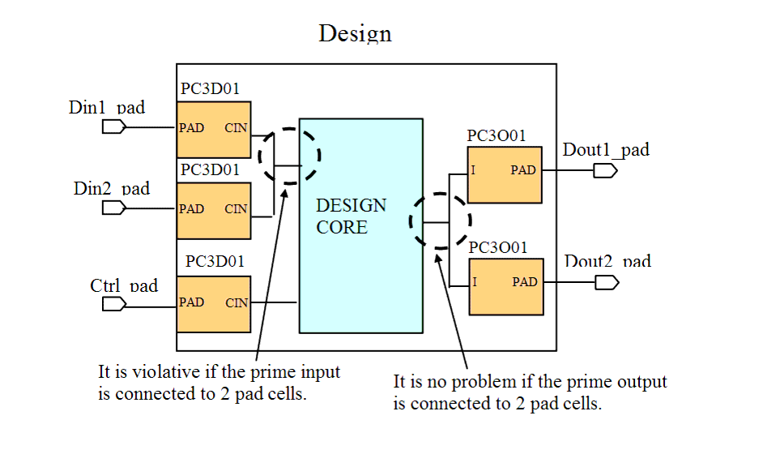

| Description | This rule verifies that primary input ports are connected to a single PAD. (Primary outputs can be connected to more than one PAD cell). |
| Policy | DESIGN |
| Ruleset | PAD |
| Language | VHDL/Verilog |
| Type | Hardware |
| Severity | Error |
This is an example of invalid Verilog code, followed by a circuit diagram that illustrates the problem:
module ntl_pad13_top ; ... // signal named with '_pad' is an input/output of Top-level Design _core U0(.Ctrl(Ctrl), .Din(Din), .Dout(Dout)); //PAD cells : PC3D01 - input PAD; PC3O01 - output PAD PC3D01 U1 (.PAD(Din1_pad), .CIN(Din)); PC3D01 U2 (.PAD(Din2_pad), .CIN(Din)); // NTL_PAD13 fires -- input signal Din is connected to 2 PAD PC3D01 U3 (.PAD(Ctrl_pad), .CIN(Ctrl)); PC3O01 U4 (.I(Dout), .PAD(Dout1_pad)); // OK -- Output signal Dout can be connected to 2 PAD PC3O01 U5 (.I(Dout), .PAD(Dout2_pad)); endmodule